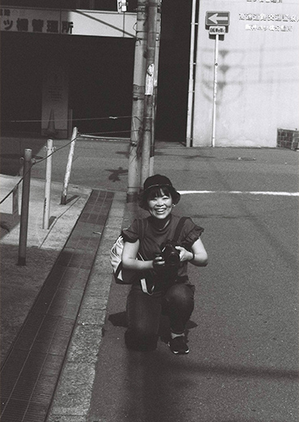
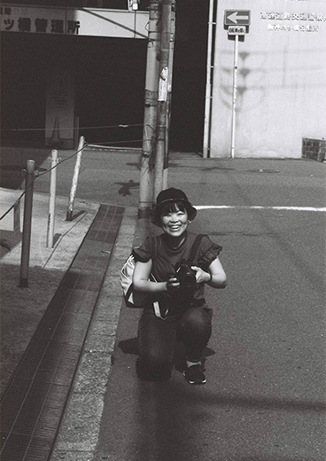

about
about


矢寺梨奈
photographer
Rina Yatera
1990年生まれ 大阪在住
大学卒業後一般企業で2年間勤めたのち、
24歳でフォトグラファーに転身。
現在、兵庫県の写真事務所にて
ウェディングフォトグラファーとして従事する傍ら、
フリーカメラマンとしても活動。
アーティスト、ライブ、ファミリーなど、
人物写真を中心に、さまざまなジャンルを撮影する。
I was born in 1990, and
living in Osaka now.
After graduation of university, I started working as an employee.
After 2 years later,I went into a photographer at 24 years old.
Now that, beside working in the wedding photo studio in Hyogo,
I act as a freelance photographer.
I mainly take portrait photos of artists, gigs,familys and etc,
also various photos like landscape.